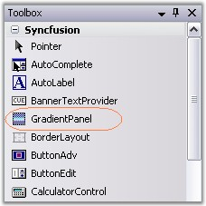
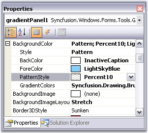
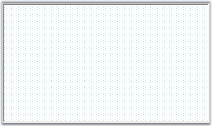
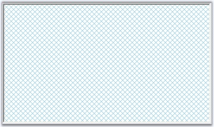

This section will guide you to create a GradientPanel control.
1. Create a new Visual C# application or VB.NET application in Visual Studio .NET.
1. Drag-and-drop a GradientPanel control object from the toolbox onto the form and resize it to the desired dimensions.

Figure 388: GradientPanel Control in Toolbox
2. Set background color for GradientPanel through property grid.

Figure 389: GradientPanel Color Collection Editor
3. Build and run the application.

Figure 390: GradientPanel
See Also
Through Code, Concepts and Features
The following steps will guide you to create a gradient panel programmatically.
4. Create a C# or VB.NET application through Visual studio and switch to the code view.
5. Add the Syncfusion.Shared.Base and Syncfusion.Shared.Windows assembly references.
6. Declare a gradient panel as below.
|
[C#]
private Syncfusion.Windows.Forms.Tools.GradientPanel gradientPanel1; |
|
[VB.NET]
Friend WithEvents GradientPanel1 As Syncfusion.Windows.Forms.Tools.GradientPanel |
In the Initialize function, include the below code to initialize the gradient panel.
|
[C#]
this.gradientPanel1 = new Syncfusion.Windows.Forms.Tools.GradientPanel(); ((System.ComponentModel.ISupportInitialize)(this.gradientPanel1)).BeginInit(); |
|
[VB.NET]
Me.GradientPanel1 = New Syncfusion.Windows.Forms.Tools.GradientPanel CType(Me.GradientPanel1, System.ComponentModel.ISupportInitialize).BeginInit() |
7. Set the properties as follows for the gradient panel and the form.
|
[C#]
// gradientPanel1 this.gradientPanel1.BackgroundColor = new Syncfusion.Drawing.BrushInfo(Syncfusion.Drawing.PatternStyle.DiagonalCross, System.Drawing.Color.LightBlue, System.Drawing.SystemColors.InactiveCaption); this.gradientPanel1.BorderColor = System.Drawing.Color.White; this.gradientPanel1.Location = new System.Drawing.Point(37, 32); this.gradientPanel1.Name = "gradientPanel1"; this.gradientPanel1.Size = new System.Drawing.Size(350, 202); this.gradientPanel1.TabIndex = 0; this.Controls.Add(this.gradientPanel1); |
|
[VB.NET]
'GradientPanel1 Me.GradientPanel1.BackgroundColor = New Syncfusion.Drawing.BrushInfo(Syncfusion.Drawing.PatternStyle.DiagonalCross, System.Drawing.Color.LightSkyBlue, System.Drawing.SystemColors.Window) Me.GradientPanel1.BorderColor = System.Drawing.Color.Black Me.GradientPanel1.Location = New System.Drawing.Point(64, 48) Me.GradientPanel1.Name = "GradientPanel1" Me.GradientPanel1.Size = New System.Drawing.Size(296, 208) Me.GradientPanel1.TabIndex = 0 Me.Controls.Add(Me.GradientPanel1) |
8. Run the application.

Figure 391: PatternStyle Gradient Panel Created Programmatically
See Also